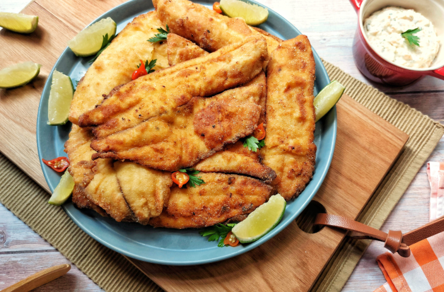
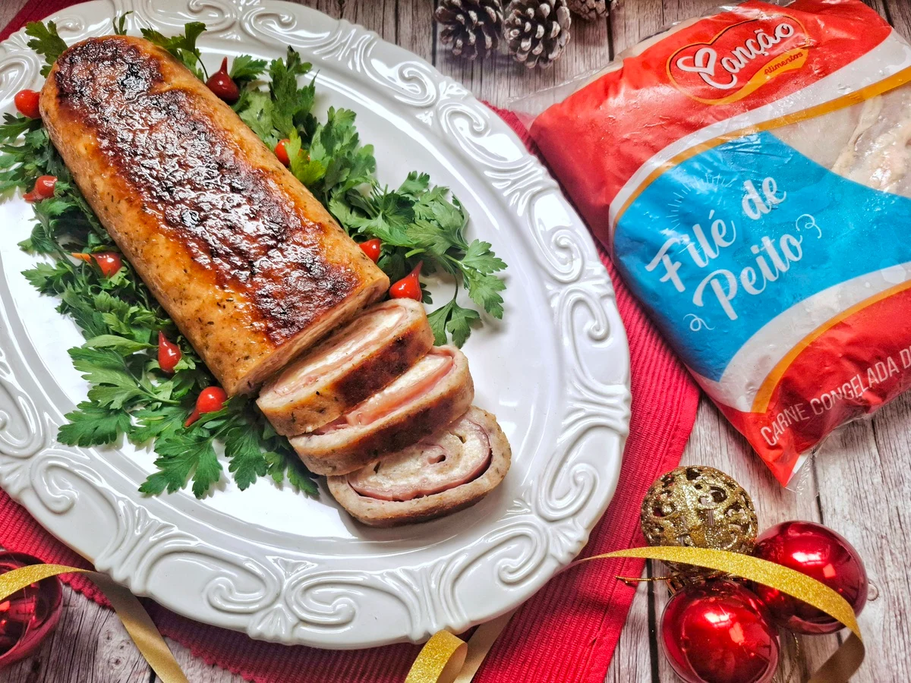

Costela Assada no forno
Ingredientes: 2 a 4 kg de costela (janela) (para esta receita, foi utilizada uma peça de 2.774 kg) Sal
grosso/sal de parrilla a gosto Pimenta-do-reino e outros temperos de sua preferência a gosto Óleo ou
azeite a gosto
Ver
receitas

Filé de frango à parmegiana
Ingredientes: 1 kg de filé de frango (também testamos com filézinho empanado)1/2 colher de sopa de sal
1 pitada de pimenta-do-reino 1 pitada de páprica picante 1 pitada de açafrão 1 limão espremido 2 ovos
(levemente batidos com sal e pimenta) Farinha de trigo para empanar Farinha de rosca para empanar 340 gramas
de molho de tomate 300 gramas de queijo mussarela ralado
Ver
receitas

Peixe frito sequinho
Ingredientes: 800 gramas de filé de tilápia congelado 2 dentes de alho amassados Suco de 1 limão 1/4
de colher de chá de pimenta-do-reino (ou a gosto) 1 colher de chá de sal (ou a gosto) 1/2 xícara de chá de
farinha de trigo 1/2 xícara de chá de fubá 1/2 colher de sopa de amido de milho 1 litro de azeite ou óleo
para fritar
Ver
receitas

Rocambole de frango recheado
Ingredientes: 500 gramas de filé de peito de frango 2 dentes de alho grandes 1/2 colher de chá de sal
1 colher de café de pimenta-do-reino 1 colher de chá de chimichurri 1/2 colher de chá de páprica doce 4
colheres de sopa de salsinha picada (ou a gosto) 1 e 1/2 xícara de chá de farinha de rosca (75 gramas) 4
colheres de sopa de azeite de oliva Manteiga em ponto de pomada para pincelar o rocambole
Ver
receitas